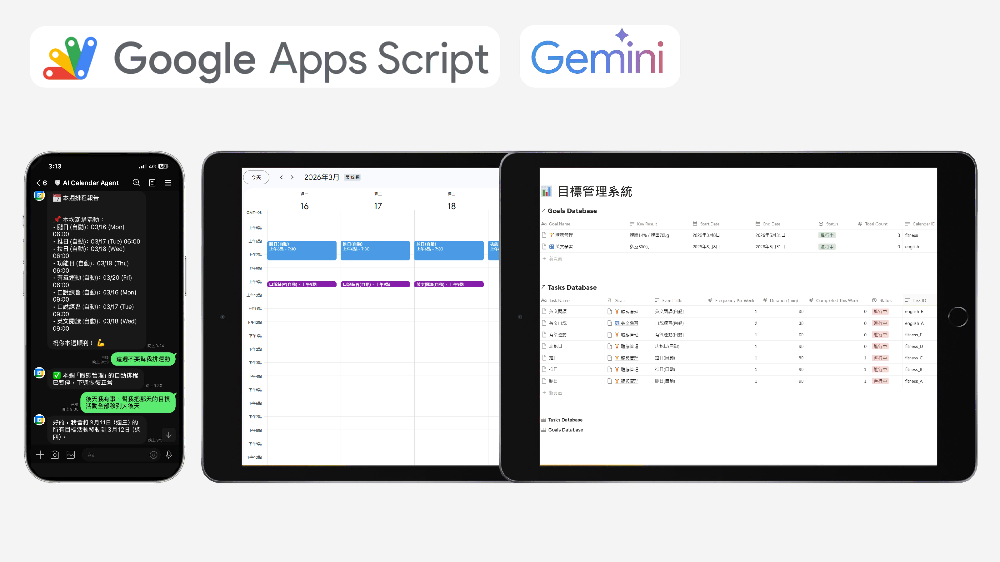
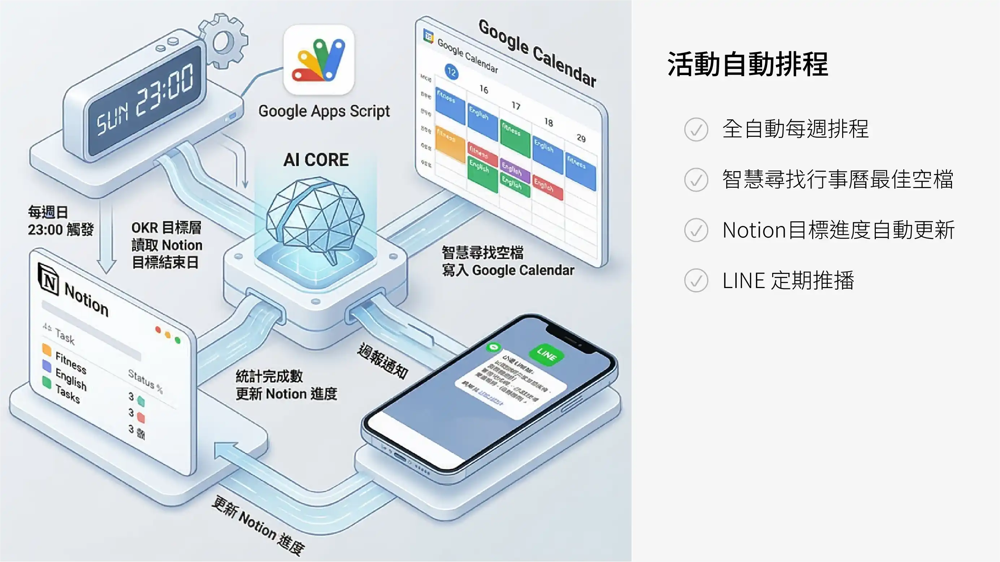
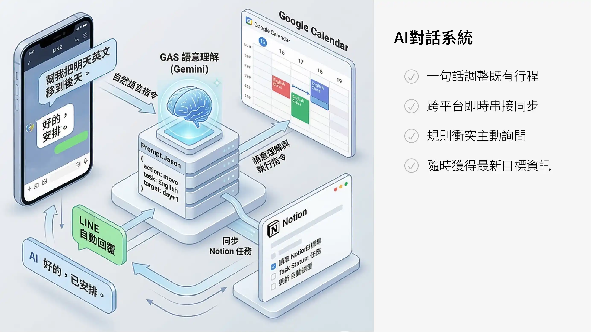
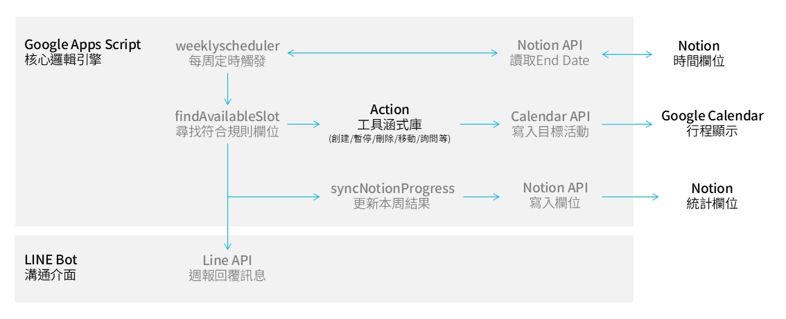
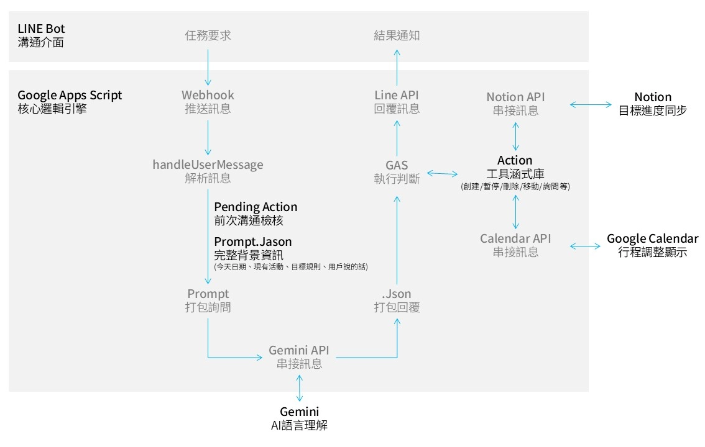

AI工具:個人目標管理系統
系統以 OKR 作為目標框架，並以Google Calendar 作為行程核心。AI 於每週日檢視既有行程，自動安排下一週的目標活動；類計執行結果顯示於 Notion，同時透過 Line 推播提醒，而用戶也反向透過對話調整活動安排，以控管行動(Action)能達成關鍵結果(Key Results)，解決環境干擾因素與惰性。
專案目前處於第一版持續迭代中。下一版本將由 Notion 負責規則與管理邏輯，透過 GAS 同步至 Google Calendar，Line 則保留作為彈性互動介面。若長期使用證明有效，也將進一步提升 AI 使用額度，嘗試發展為具備主動監控與多任務決策能力的 Agent 型工具。



V1自動排程邏輯圖/
每週日 23:00 自動觸發，無需人工介入。Google Apps Script 啟動 weeklyScheduler 後，首先透過 Notion API 讀取各目標的結束日期，超過期限者直接略過。系統計算本週尚需新增的活動數量，呼叫 findAvailableSlot 在符合時間規則的空位中安排行程，再透過 Calendar API 將活動寫入 Google Calendar。排程完成後，LINE API 推送週報通知使用者。最後執行 syncNotionProgress，從 Calendar 統計本週各任務完成次數，透過 Notion API 回寫任務完成數與目標累計總數。

V1對話系統邏輯圖/
以 Google Apps Script 為核心邏輯引擎，串接 LINE Bot、Gemini AI、Google Calendar 與 Notion 四大服務。使用者透過 LINE 傳送自然語言指令，經由 Webhook 推送至 GAS，GAS 將用戶訊息結合行程與規則組成 Prompt，呼叫 Gemini API 進行語意解析，Gemini 回傳結構化 JSON 指令，GAS 據此執行對應工具函式，透過 Calendar API 調整行程、Notion API 同步進度，最終經 LINE API 回覆結果。